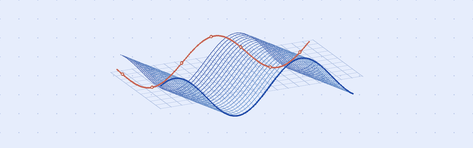

Study Assistant Pro
Organize a study session, explore the elements, or run an experiment in Equationarium.
Open study deskLearning workspaces

Independent learning
Study desk
Plan tasks, review flashcards, and keep a record of what you learn.

Chemistry
Periodic table
Explore 118 elements, their electron configurations, and orbital shapes.

Physics
Equationarium
Investigate motion, fields, waves, and more across 34 interactive experiments.